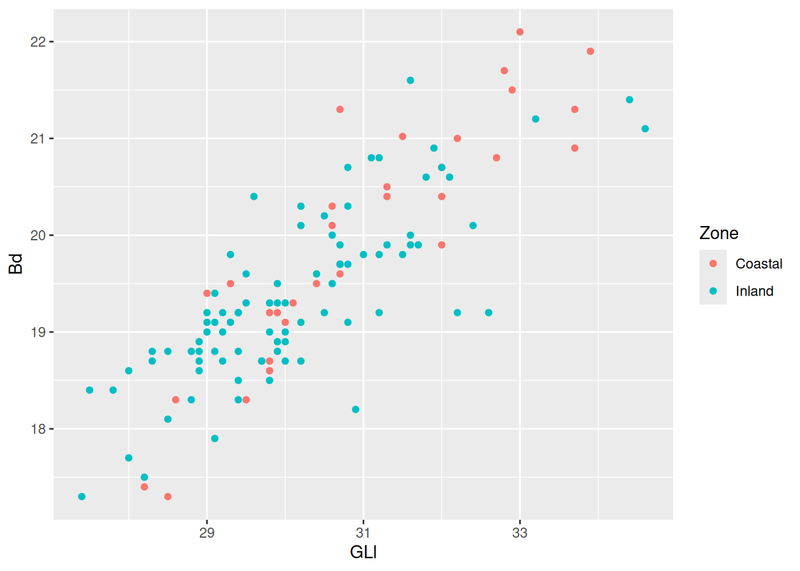
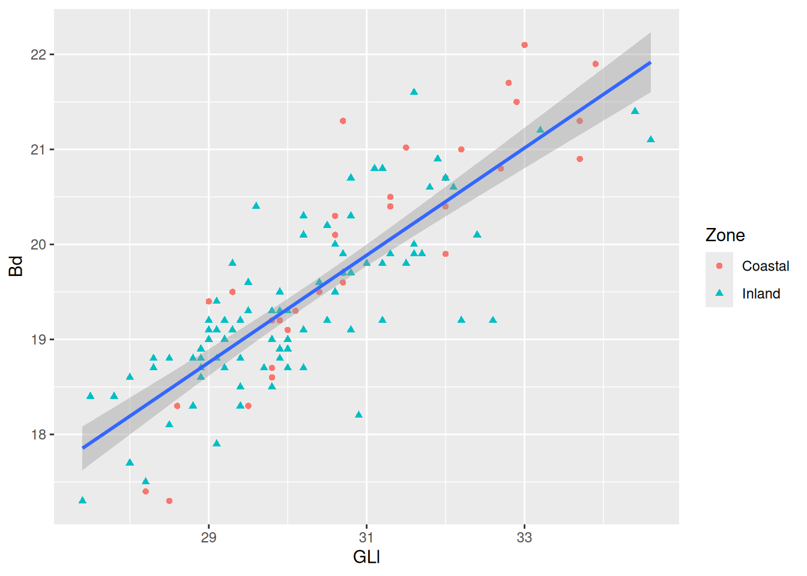
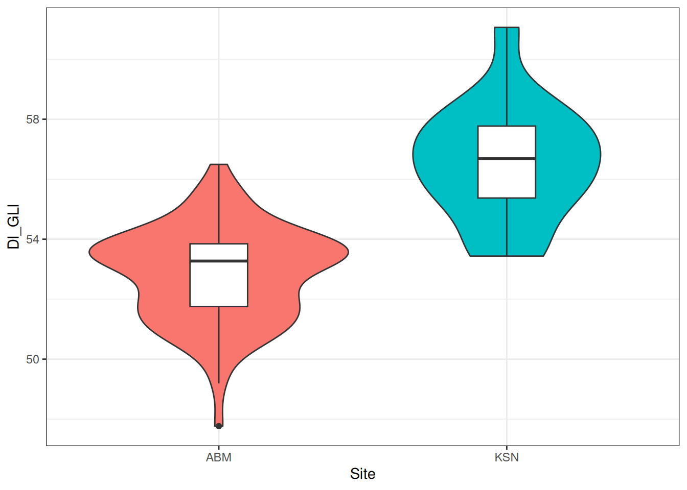

install.packages("tidyverse")An Example Workflow
Prerequisites
Knowledge
R Basics
This is a quick example of a workflow working with data. It serves as a “carrot on a stick” that will hopefully get you through the more tedious parts of learning a programming language. If that doesn’t work, here’s a motivational penguin:

Installing tidyverse
The tidyverse is a collection of R packages that gives us an extensive toolkit for working with data, from importing to transforming and visualising.
To install the tidyverse:
If you already installed tidyverse, doing this will just update the package.
Now the package is installed on our system, we can load it with library(). In R basics we only worked in the console, so we have no real overview of what we’ve done. You can see previous commands by pressing the up arrow ↑ on your keyboard, or look at the .Rhistory file, but a better way of keeping a record of the steps we take is by working in an R script.
Create a new script
File > New File > R ScriptThis will open a blank document. Here we can enter as many commands as we want to run. Pressing Enter will no longer run the command. Instead, you can run a command using Ctrl/Cmd + Enter. We can save the script (in scripts/) and load it any time we want to see what we’ve done so far.
At the top of the script, load tidyverse.
library(tidyverse)Importing data
Usually we would use the read_csv() function to import a local .csv file, but we can also give it a url (as long as it points to a .csv file).
library(tidyverse)
sheep_data <- read_csv("https://edu.nl/3hru6")Barring any issues, we should now have the data available in R. A quick check with the head() function should allow us to see if anything went wrong.
head(sheep_data) # first 6 rows of the data# A tibble: 6 × 9
specID Taxon Site Zone Period group GLl Bd Dl
<dbl> <chr> <chr> <chr> <chr> <chr> <dbl> <dbl> <dbl>
1 9 sheep DOR Coastal IA2 Dor 31.5 21.0 18.2
2 10 sheep DOR Coastal IA2 Dor 29.3 19.5 16.8
3 11 sheep DOR Coastal IA2 Dor 28.2 17.4 15.9
4 12 sheep DOR Coastal IA2 Dor 29 19.4 16.5
5 13 sheep DOR Coastal IA2 Dor 29.8 18.7 16.4
6 14 sheep DOR Coastal IA2 Dor 30.6 20.3 16.6The data are from the publication:
The contribution of Mediterranean connectivity to morphological variability in Iron Age sheep of the Eastern Mediterranean Sierra A. Harding, Angelos Hadjikoumis, Shyama Vermeersch, Roee Shafir, Nimrod Marom. bioRxiv 2022.12.24.521859; https://doi.org/10.1101/2022.12.24.521859
Visualising the data with ggplot2
First order of business is to explore the data set visually. To do that we will use the ggplot2 package, which is part of tidyverse.
For example, we could look at the relationship between the GLl and Bd measurements of the specimens.
The anatomy of a standard ggplot is:
ggplot(data = <data>, aes(<mappings>)) +
<geometric function> +
<customisations>To start creating a plot, we use the ggplot() function and provide our data as the first argument.
ggplot(data = sheep_data)
This gives us a blank canvas on which we can create our visual masterpiece. Right now, however, all ggplot() knows is that we want to create a plot with our data, but that’s not enough information, and ggplot() isn’t a mind-reader. We need to tell ggplot which variables we want to plot by providing the mapping to the aesthetics of the plot.
ggplot(data = sheep_data, mapping = aes(x = GLl, y = Bd))
By providing the mapping, ggplot() now knows the bounds of the variables that we want to visualise, and can map the x and y aesthetics to our plot. Our code is pretty long, so to make it readable (to humans) we can expand it over multiple lines.
ggplot(
data = sheep_data,
mapping = aes(x = GLl, y = Bd)
)Finally, we need to define a geometrical object to represent our data. For a scatter plot the geom we need is geom_point().
ggplot(
data = sheep_data,
mapping = aes(x = GLl, y = Bd)
) +
geom_point()Already we can see a relationship between the GLl and Bd of our sheep.
Adding aesthetics
We can now already see that there is a positive relationship between the variables GLl and Bd. To take this relationship a step further, we can map a variable to colour.
ggplot(
data = sheep_data,
mapping = aes(x = GLl, y = Bd, colour = Zone)
) +
geom_point()
Now we can see the relationship (or lack thereof) in the measurements of sheep astragali between the Zones of occupation. To really drive home the relationship between the variables we can add a curve with geom_smooth(). We want to see the linear relationship so we will use method = "lm".
ggplot(
data = sheep_data,
aes(x = GLl, y = Bd, colour = Zone)
) +
geom_point() +
geom_smooth(method = "lm")`geom_smooth()` using formula = 'y ~ x'The confidence interval is making it kinda difficult to see the plot, so we can remove them with se = FALSE.
ggplot(
data = sheep_data,
aes(x = GLl, y = Bd, colour = Zone)
) +
geom_point() +
geom_smooth(method = "lm", se = FALSE)`geom_smooth()` using formula = 'y ~ x'
Because we are providing the colour mapping in the ggplot(), all geoms inherit this value. If we just want to look at the overall relationship, we can move the colour mapping to geom_point(), which will allow us to keep the Phase colours and see the overall trendline for the data. We can reintroduce the confidence interval, too.
ggplot(
data = sheep_data,
aes(x = GLl, y = Bd)
) +
geom_point(aes(colour = Zone)) +
geom_smooth(method = "lm")`geom_smooth()` using formula = 'y ~ x'Now for some finishing touches. There are many reasons why only using colours to convey information is a bad idea. Think about colour perception, and that publishers charge you extra for colour printing. So let’s make each Phase a different shape as well.
ggplot(
data = sheep_data,
aes(x = GLl, y = Bd)
) +
geom_point(aes(colour = Zone, shape = Zone)) +
geom_smooth(method = "lm")`geom_smooth()` using formula = 'y ~ x'
Shapes can be resized using the size argument in the appropriate geom. Note we don’t want the size to be linked to an aesthetic, so we add the argument outside of aes().
ggplot(
sheep_data,
aes(x = GLl, y = Bd)
) +
geom_point(aes(colour = Zone, shape = Zone), size = 2) + # increase the size
geom_smooth(method = "lm")`geom_smooth()` using formula = 'y ~ x'
Then for the finishing touch, a new background and new axis labels.
ggplot(
sheep_data,
aes(x = GLl, y = Bd)
) +
geom_point(
aes(colour = Zone, shape = Zone),
size = 2
) +
geom_smooth(method = "lm") +
scale_colour_viridis_d(end = 0.8) +
theme_minimal() +
labs(
x = "Greatest lateral length",
y = "Breadth of distal end"
)`geom_smooth()` using formula = 'y ~ x'
Data Transformation with {dplyr}
We can start working on our data frame to find additional relationships. This will largely be done with functions from the tidyverse package dplyr.
Transforming rows
The main functions used to operate on rows of a data frame are:
filter(): filter rows based on a conditionarrange(): arrange rows by ascending or descending values
Let’s say we want to filter data that are related to the Site “KSN”.
filter(sheep_data, Site == "KSN")# A tibble: 18 × 9
specID Taxon Site Zone Period group GLl Bd Dl
<dbl> <chr> <chr> <chr> <chr> <chr> <dbl> <dbl> <dbl>
1 25 sheep KSN Coastal PER Keisan 32 19.9 17.7
2 26 sheep KSN Coastal PER Keisan 30.7 19.7 18
3 27 sheep KSN Coastal IA2 Keisan 28.6 18.3 16.5
4 28 sheep KSN Coastal IA2 Keisan 31.3 20.4 16.9
5 29 sheep KSN Coastal PER Keisan 29.5 18.3 15.8
6 31 sheep KSN Coastal PER Keisan 33 22.1 18.8
7 32 sheep KSN Coastal PER Keisan 32.2 21 18.3
8 33 sheep KSN Coastal IA2 Keisan 32 20.4 17.1
9 34 sheep KSN Coastal PER Keisan 30.6 20.1 17.3
10 35 sheep KSN Coastal PER Keisan 33.7 20.9 18.7
11 36 sheep KSN Coastal PER Keisan 28.5 17.3 16
12 37 sheep KSN Coastal PER Keisan 32.8 21.7 18.7
13 38 sheep KSN Coastal IA2 Keisan 32.7 20.8 18.9
14 39 sheep KSN Coastal IA2 Keisan 30.1 19.3 17.4
15 40 sheep KSN Coastal IA2 Keisan 29.8 19.2 17.4
16 41 sheep KSN Coastal IA2 Keisan 30 19.1 16.6
17 42 sheep KSN Coastal IA2 Keisan 32 20.7 17.8
18 43 sheep KSN Coastal PER Keisan 33.9 21.9 20.7Now say we’re only interested in rows related to “KSN” and “ABM”. That means we want to filter all rows where Site is “KSN” or “ABM”.
filter(
sheep_data,
Site == "KSN" | # or
Site == "ABM"
)# A tibble: 105 × 9
specID Taxon Site Zone Period group GLl Bd Dl
<dbl> <chr> <chr> <chr> <chr> <chr> <dbl> <dbl> <dbl>
1 25 sheep KSN Coastal PER Keisan 32 19.9 17.7
2 26 sheep KSN Coastal PER Keisan 30.7 19.7 18
3 27 sheep KSN Coastal IA2 Keisan 28.6 18.3 16.5
4 28 sheep KSN Coastal IA2 Keisan 31.3 20.4 16.9
5 29 sheep KSN Coastal PER Keisan 29.5 18.3 15.8
6 31 sheep KSN Coastal PER Keisan 33 22.1 18.8
7 32 sheep KSN Coastal PER Keisan 32.2 21 18.3
8 33 sheep KSN Coastal IA2 Keisan 32 20.4 17.1
9 34 sheep KSN Coastal PER Keisan 30.6 20.1 17.3
10 35 sheep KSN Coastal PER Keisan 33.7 20.9 18.7
# ℹ 95 more rowsOr, in other words, we want all rows where the value of Site is not “DOR”.
filtered_site <- filter(
sheep_data,
Site != "DOR"
)What’s going on under the hood when we use filter, is the condition we create produces a Boolean vector that determines which rows should be kept.
sheep_data$Site != "DOR" [1] FALSE FALSE FALSE FALSE FALSE FALSE FALSE FALSE FALSE FALSE FALSE FALSE
[13] FALSE FALSE TRUE TRUE TRUE TRUE TRUE TRUE TRUE TRUE TRUE TRUE
[25] TRUE TRUE TRUE TRUE TRUE TRUE TRUE TRUE TRUE TRUE TRUE TRUE
[37] TRUE TRUE TRUE TRUE TRUE TRUE TRUE TRUE TRUE TRUE TRUE TRUE
[49] TRUE TRUE TRUE TRUE TRUE TRUE TRUE TRUE TRUE TRUE TRUE TRUE
[61] TRUE TRUE TRUE TRUE TRUE TRUE TRUE TRUE TRUE TRUE TRUE TRUE
[73] TRUE TRUE TRUE TRUE TRUE TRUE TRUE TRUE TRUE TRUE TRUE TRUE
[85] TRUE TRUE TRUE TRUE TRUE TRUE TRUE TRUE TRUE TRUE TRUE TRUE
[97] TRUE TRUE TRUE TRUE TRUE TRUE TRUE TRUE TRUE TRUE TRUE TRUE
[109] TRUE TRUE TRUE TRUE TRUE TRUE TRUE TRUE TRUE TRUE TRUEWhenever a value is TRUE, that row will be retained, and whenever it is FALSE, that row will be removed.
We can then arrange the data frame in ascending or descending order of GLl.
arrange(filtered_site, GLl) # ascending# A tibble: 105 × 9
specID Taxon Site Zone Period group GLl Bd Dl
<dbl> <chr> <chr> <chr> <chr> <chr> <dbl> <dbl> <dbl>
1 86 sheep ABM Inland IA2 ABM 27.4 17.3 14.7
2 97 sheep ABM Inland IA2 ABM 27.5 18.4 14.9
3 119 sheep ABM Inland IA2 ABM 27.8 18.4 14.9
4 67 sheep ABM Inland IA2 ABM 28 17.7 15.5
5 98 sheep ABM Inland IA2 ABM 28 18.6 15.1
6 127 sheep ABM Inland IA2 ABM 28.2 17.5 14.6
7 107 sheep ABM Inland IA2 ABM 28.3 18.7 15.2
8 134 sheep ABM Inland IA2 ABM 28.3 18.8 15.1
9 36 sheep KSN Coastal PER Keisan 28.5 17.3 16
10 68 sheep ABM Inland IA2 ABM 28.5 18.8 15.8
# ℹ 95 more rowsarrange(filtered_site, desc(GLl)) # descending# A tibble: 105 × 9
specID Taxon Site Zone Period group GLl Bd Dl
<dbl> <chr> <chr> <chr> <chr> <chr> <dbl> <dbl> <dbl>
1 126 sheep ABM Inland IA2 ABM 34.6 21.1 18.1
2 104 sheep ABM Inland IA2 ABM 34.4 21.4 17.9
3 43 sheep KSN Coastal PER Keisan 33.9 21.9 20.7
4 35 sheep KSN Coastal PER Keisan 33.7 20.9 18.7
5 129 sheep ABM Inland IA2 ABM 33.2 21.2 17.6
6 31 sheep KSN Coastal PER Keisan 33 22.1 18.8
7 37 sheep KSN Coastal PER Keisan 32.8 21.7 18.7
8 38 sheep KSN Coastal IA2 Keisan 32.7 20.8 18.9
9 89 sheep ABM Inland IA2 ABM 32.6 19.2 16.7
10 71 sheep ABM Inland IA2 ABM 32.4 20.1 16.9
# ℹ 95 more rowsTransforming columns
The most common functions for transforming columns are:
mutateselect
The mutate function allows us to add variables. These can be variables with values that we define, or calculated from other variables. For example, we could create a variable containing the name of the dataset:
mutate(filtered_site, dataset = "Sheep Astragali")# A tibble: 105 × 10
specID Taxon Site Zone Period group GLl Bd Dl dataset
<dbl> <chr> <chr> <chr> <chr> <chr> <dbl> <dbl> <dbl> <chr>
1 25 sheep KSN Coastal PER Keisan 32 19.9 17.7 Sheep Astragali
2 26 sheep KSN Coastal PER Keisan 30.7 19.7 18 Sheep Astragali
3 27 sheep KSN Coastal IA2 Keisan 28.6 18.3 16.5 Sheep Astragali
4 28 sheep KSN Coastal IA2 Keisan 31.3 20.4 16.9 Sheep Astragali
5 29 sheep KSN Coastal PER Keisan 29.5 18.3 15.8 Sheep Astragali
6 31 sheep KSN Coastal PER Keisan 33 22.1 18.8 Sheep Astragali
7 32 sheep KSN Coastal PER Keisan 32.2 21 18.3 Sheep Astragali
8 33 sheep KSN Coastal IA2 Keisan 32 20.4 17.1 Sheep Astragali
9 34 sheep KSN Coastal PER Keisan 30.6 20.1 17.3 Sheep Astragali
10 35 sheep KSN Coastal PER Keisan 33.7 20.9 18.7 Sheep Astragali
# ℹ 95 more rowsConsidering we only have this dataset, it’s not that informative. Instead, we could use the existing GLl and Dl variables to create a new variable containing the dimension index Dl and GLl of a specimen, and add it .after Dl in our data frame.
dim_index <- mutate(
filtered_site,
Dl_GLl = Dl / GLl * 100, .after = Dl
)Pipes
We are starting to produce a lot of intermediate data frames, which will end up taking up memory. Not a lot in this case, but if we were working with a large dataset, it might not be insignificant.
The pipe, |> is an operator that allows us to string together multiple functions/operations on the same data, without the need to use the data argument in each step, and without the need to create intermediate objects.
Choosing a pipe
As of R version 4.1.0, there are now two pipe operators. The ‘native’ pipe, |> and the {magrittr} pipe, %>%. They are very similar but differ in some key areas. For more information, see this blog post Here we will be using the native pipe since it doesn’t require installing additional packages (although {magrittr} is part of the tidyverse and many packages import the magrittr pipe).
To recreate the previous steps using the pipe:
sheep_data |> # we take our data, and then
filter(Site != "DOR") |> # filter, and then
mutate(Dl_GLl = Dl / GLl * 100) # create a new variable# A tibble: 105 × 10
specID Taxon Site Zone Period group GLl Bd Dl Dl_GLl
<dbl> <chr> <chr> <chr> <chr> <chr> <dbl> <dbl> <dbl> <dbl>
1 25 sheep KSN Coastal PER Keisan 32 19.9 17.7 55.3
2 26 sheep KSN Coastal PER Keisan 30.7 19.7 18 58.6
3 27 sheep KSN Coastal IA2 Keisan 28.6 18.3 16.5 57.7
4 28 sheep KSN Coastal IA2 Keisan 31.3 20.4 16.9 54.0
5 29 sheep KSN Coastal PER Keisan 29.5 18.3 15.8 53.6
6 31 sheep KSN Coastal PER Keisan 33 22.1 18.8 57.0
7 32 sheep KSN Coastal PER Keisan 32.2 21 18.3 56.8
8 33 sheep KSN Coastal IA2 Keisan 32 20.4 17.1 53.4
9 34 sheep KSN Coastal PER Keisan 30.6 20.1 17.3 56.5
10 35 sheep KSN Coastal PER Keisan 33.7 20.9 18.7 55.5
# ℹ 95 more rowsThink of the pipe as the phrase ‘and then’.

First we take our data frame, and then we filter() on the Site variable, and then we take the output (the data frame we originally called filtered_site) from that operation and pipe it to .data argument in the next mutate() operation to create the new variable Dl_GLl. The output of these operations is the same as the dim_index data frame.
The select() function allows us to… well, select columns of the data frame that we want to keep (or not keep). We do this by providing the name(s) of the column(s) we want to select.
select(sheep_data, specID, Site, GLl, Dl)# A tibble: 119 × 4
specID Site GLl Dl
<dbl> <chr> <dbl> <dbl>
1 9 DOR 31.5 18.2
2 10 DOR 29.3 16.8
3 11 DOR 28.2 15.9
4 12 DOR 29 16.5
5 13 DOR 29.8 16.4
6 14 DOR 30.6 16.6
7 15 DOR 30.4 16.3
8 16 DOR 30.7 16.3
9 17 DOR 30.7 17.7
10 19 DOR 31.3 18
# ℹ 109 more rowsWe could also use the position of the columns:
select(sheep_data, 1, 3, 7, 9)# A tibble: 119 × 4
specID Site GLl Dl
<dbl> <chr> <dbl> <dbl>
1 9 DOR 31.5 18.2
2 10 DOR 29.3 16.8
3 11 DOR 28.2 15.9
4 12 DOR 29 16.5
5 13 DOR 29.8 16.4
6 14 DOR 30.6 16.6
7 15 DOR 30.4 16.3
8 16 DOR 30.7 16.3
9 17 DOR 30.7 17.7
10 19 DOR 31.3 18
# ℹ 109 more rowsNegating columns we don’t want is possible, and may sometimes be the easier option.
select(sheep_data, !c(Taxon, Zone, Period, group, Bd))# A tibble: 119 × 4
specID Site GLl Dl
<dbl> <chr> <dbl> <dbl>
1 9 DOR 31.5 18.2
2 10 DOR 29.3 16.8
3 11 DOR 28.2 15.9
4 12 DOR 29 16.5
5 13 DOR 29.8 16.4
6 14 DOR 30.6 16.6
7 15 DOR 30.4 16.3
8 16 DOR 30.7 16.3
9 17 DOR 30.7 17.7
10 19 DOR 31.3 18
# ℹ 109 more rows
Warning
select(sheep_data, !Taxon, !Zone, !Period, !group, !Bd)will not work as expected.
Let’s create a new, reduced data frame with the previous operations, and add an additional variable with a dimension index for Bd and Dl.
dimension_data <- sheep_data |>
filter(Site != "DOR") |>
select(specID, Site, GLl, Bd, Dl) |>
mutate(
Dl_GLl = Dl / GLl * 100,
Bd_Dl = Bd / Dl * 100
)Grouping and summarising data
In many situations you’ll want to summarise data and calculate summary statistics for different groups. The dplyr functions summarise/summarize and group_by will help you do that.
dimension_data |>
group_by(Site)# A tibble: 105 × 7
# Groups: Site [2]
specID Site GLl Bd Dl Dl_GLl Bd_Dl
<dbl> <chr> <dbl> <dbl> <dbl> <dbl> <dbl>
1 25 KSN 32 19.9 17.7 55.3 112.
2 26 KSN 30.7 19.7 18 58.6 109.
3 27 KSN 28.6 18.3 16.5 57.7 111.
4 28 KSN 31.3 20.4 16.9 54.0 121.
5 29 KSN 29.5 18.3 15.8 53.6 116.
6 31 KSN 33 22.1 18.8 57.0 118.
7 32 KSN 32.2 21 18.3 56.8 115.
8 33 KSN 32 20.4 17.1 53.4 119.
9 34 KSN 30.6 20.1 17.3 56.5 116.
10 35 KSN 33.7 20.9 18.7 55.5 112.
# ℹ 95 more rows
Linebreaks
You can’t just create a linebreak anywhere in your code. It should come after certain operators and symbols. It should come after the + symbol in a ggplot and after a pipe. The following will not work:
dimension_data
|> group_by(Zone)You will likely not have noticed any difference in this data frame, but if you look at the top where the description is, you will see that it is now A tibble: 107 x 7 with Groups: Site [2]. This means that the tibble (or data frame) is grouped by the variable Site which has two groupings.
Once a data frame is grouped, we can perform specific operations on those groups, like calculating summary statistics.
dimension_data |>
group_by(Site) |>
summarise(
mean_Dl_GLl = mean(Dl_GLl)
)# A tibble: 2 × 2
Site mean_Dl_GLl
<chr> <dbl>
1 ABM 52.8
2 KSN 56.5This calculates the mean area for each group. We can add multiple arguments to summarise() to get the standard deviation and number of rows in each group:
dimension_data |>
group_by(Site) |>
summarise(
n = n(),
mean_Dl_GLl = mean(Dl_GLl),
sd_DL_GLl = sd(Dl_GLl)
)# A tibble: 2 × 4
Site n mean_Dl_GLl sd_DL_GLl
<chr> <int> <dbl> <dbl>
1 ABM 87 52.8 1.58
2 KSN 18 56.5 1.93We can also visualise this with a box plot.
dimension_data |>
ggplot(aes(x = Site, y = Dl_GLl)) +
geom_boxplot()Box plots are notorious for hiding the distribution of data, so let’s add a violin plot with geom_violin() behind the box plots. If you’re lucky, sometimes the violin plots will look like pots. If you’re even luckier, the pot-like plots will be of data from actual pots!
dimension_data |>
ggplot(aes(x = Site, y = Dl_GLl)) +
geom_violin() + # will be displayed behind the box plots
geom_boxplot() The box plots are a little big, making it hard to see the violin plots behind them. We can use the width argument to adjust the width of the boxes.
dimension_data |>
ggplot(aes(x = Site, y = Dl_GLl)) +
geom_violin() +
geom_boxplot(width = 0.2)
Add some colour to the violins to contrast the two plot types, and change the background,
dimension_data |>
ggplot(aes(x = Site, y = Dl_GLl)) +
geom_violin(aes(fill = Site)) +
geom_boxplot(width = 0.2) +
theme_bw() +
theme(legend.position = "none") # and remove the redundant legend
et violà!
This masterpiece should be saved.
ggsave("figures/my-first-plot.png")This is a pretty idealised situation where the data are in a useable format. Real world data are rarely this easy to work with. I also removed the missing data from the example dataset. Hardly representative of a real-world archaeological dataset…